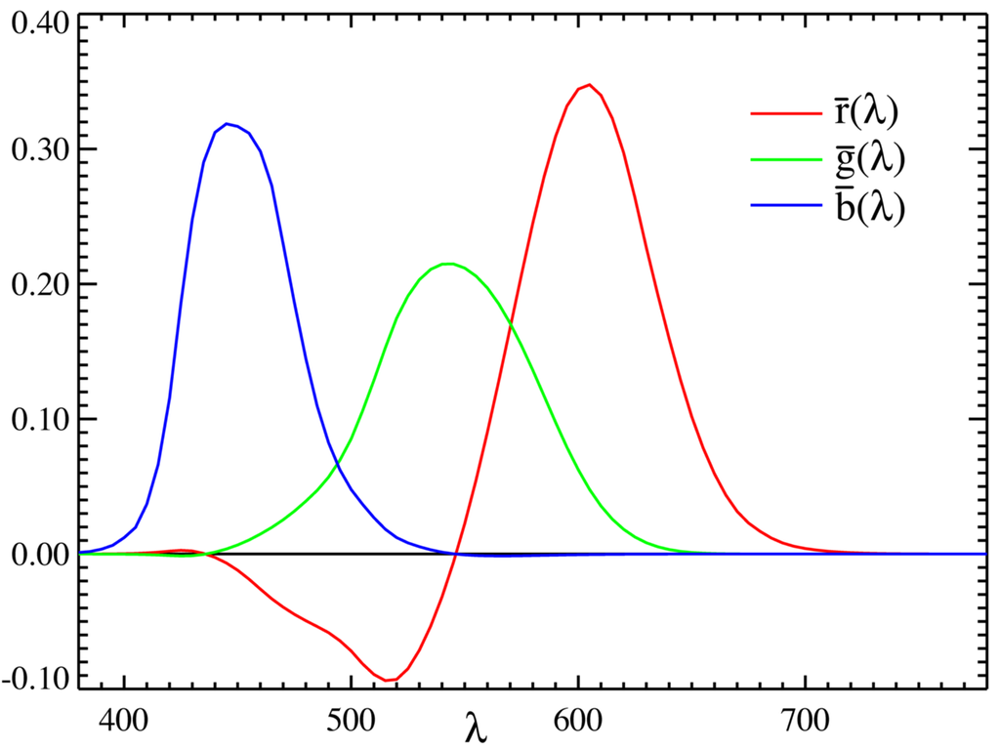

\mathbb{P}^n = (\mathbb{R}^{n+1} \setminus \{0\}) / "colinearity"
For x \in \mathbb{R}^n, a point \tilde{x} \in \mathbb{P}^n is associated (homogenous coordinates of x), such as \tilde{x} = w \bar{x} where \bar{x} = (x,1) is the augmented vector of x
In the projective space, points with a null last coordinate (w=0) are called infinity points.
The equation of a 2d line ax+by+c = 0 can be rewritten:
\bar{x} \cdot \tilde{l} = 0
where \tilde{l} = (a,b,c) \sim (\cos{\theta}, \sin{\theta}, d) \in \mathbb{P}^2
The equation of a 3d plane ax+by+cz+d = 0 can be rewritten:
\bar{x} \cdot \tilde{m} = 0
where \tilde{l} = (a,b,c) \sim (\cos{\theta}\cos{\phi}, \sin{\theta}\cos{\phi}, \sin{\phi}, \delta) \in \mathbb{P}^3
Conic sections can easily be represented by a quadric equation:
\tilde{x}^T Q \tilde{x} = 0
| name | expression | Dof (2d/3d) | Preserves |
|---|---|---|---|
| homography | \tilde{x}' = \tilde{H} \tilde{x} | 8/15 | straght lines |
| affine | x' = A \bar{x} | 6/12 | parallelism |
| similarity | x' = [sR,t] \bar{x} | 4/7 | angles |
| euclidian | x' = [R,t] \bar{x} | 3/6 | lenghts |
| translation | x' = t+x | 2/3 | orientation |
For a rotation along n with angle \theta (Rodriguez formula):
R(n,\theta) = I + \sin{\theta} [n]_{\times} + (1-\cos{\theta})[n]_{\times}^2
where [n]_{\times} is the matrix defined by n \times v = [n]_{\times} v
q \in \mathbb{H} is a quaternion if q=a+ib+jc+kd with i^2 = j^2 = k^2 = ijk = -1
Some definitions:
A simple notation: q = a + \vec{v} with \vec{v} = (b,c,d). Then quaternion products are easy to compute, by defining \vec{v} \vec{w} = \vec{v} \times \vec{w} - \vec{v} \cdot \vec{w}
Then, a 3d rotation can be interpreted as a quaternion product.
Let q_\alpha = \cos{\frac{\alpha}{2}} + \vec{u}\sin{\frac{\alpha}{2}} with ||\vec{u}||=1, then the rotation of \vec{v} along \vec{u}, with angle \theta is:
q_\alpha \vec{v} q_\alpha^{-1}
Here, x \in \mathbb{R}^2 and p \in \mathbb{R}^3
Correspond to just dropping the z coordinate
x = [I_2, O] p
It can be scaled:
x = [sI_2, O] p
x = (\frac{p_x}{p_z}, \frac{p_y}{p_z})
For a pinehole camera centered in O_c with a proper basis (p_c is the coordinate in camera basis)
\tilde{x_s} = K p_c = K [R,t] p = P p
Where:
It is often preferable to define:
\tilde{P} = \begin{bmatrix} K & 0\\ 0 & 1 \end{bmatrix} \begin{bmatrix} R & t\\ 0 & 1 \end{bmatrix} = \tilde{K}E
Then:
x_s \sim \tilde{P} \bar{p}
where x_s = (x_s, y_s, 1, d) and \bar{p} = (p_x, p_y, p_z, 1), d is the projective depth, which is not always present in photos, and need to be estimated for 3d reconstruction (stereo-matching…).
For two cameras we have:
\tilde{x_1} \sim \tilde{P_1} p = \tilde{P_1} \tilde{P_0}^{-1} \tilde{x_0} = M_{10} \tilde{x_0}
The matrix M_{10} has a simple expression (which doesn’t require d) in two cases:
radiance is used to define the enegy emitted in the frequence interval d \nu in the solid angle d \omega = \sin{\theta} d\theta d \phi through the surface d \sigma = dS cos{\theta}:
d \mathcal{E}_\nu = L_\nu d \sigma d \nu d \Omega dt
Then, the out radiance (reflexion of light) in direction \omega_r is defindes as:
L_\nu (\omega_r) = \int_{2\pi} f_\nu(\omega_i, \omega_r) L_\nu(\omega_i) d \omega_i
where f_\nu is a probabilistic distibution which represents the probability for an incident photon to be reflected in d \omega_r along \omega_r.
\rightarrow Phong shading model

Properties:
\begin{bmatrix} X \\ Y \\ Z \\ \end{bmatrix} = \frac{1}{0.17697} \begin{bmatrix} 0.49 & 0.31 & 0.20 \\ 0.17697 & 0.81240 & 0.01063 \\ 0.00 & 0.01 & 0.99 \\ \end{bmatrix} \begin{bmatrix} R \\ G \\ B \\ \end{bmatrix}